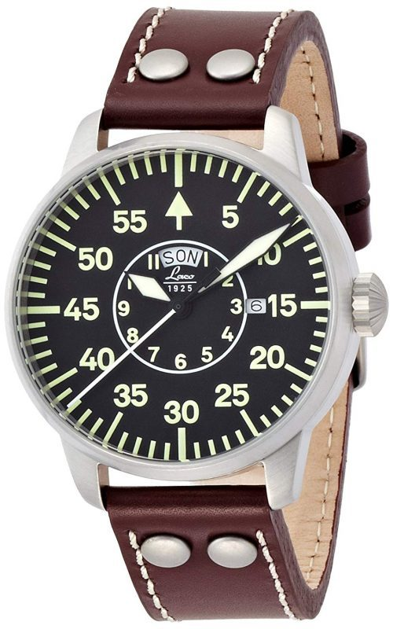
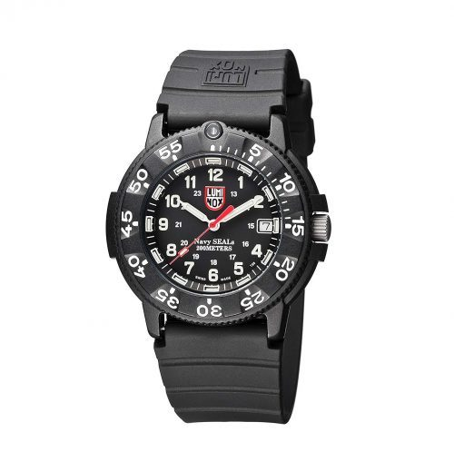
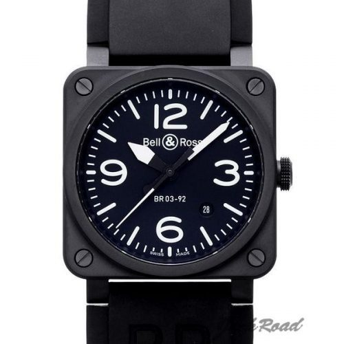

Q1.軍人と聞くとカッコいいと思う
Q2.ミリタリーと聞いたら、頑丈でゴツイ物が良い
Q3.爆発は芸術だ
Q4.ミリタリーと聞けばファッションだと思う
Q5.ぶっちゃけ、自分はミリオタだ

シンプルで視認性の高い文字盤が特徴のミリタリーウォッチ。デザインは1940年代のドイツ軍に納品された腕時計を再現しており、パイロットウォッチしての機能美を楽しめます。針やインデックスにはルミノバ加工が施されており、夜間の視認性は抜群。また、安心して洗い物ができる5気圧防水を備えています。ヴィンテージ風のシンプルなデザインなので、ビジネス・プライベートでの兼用もしやすいのが嬉しいポイント。さまざまな場面で着用できるミリタリーウォッチを探している方におすすめです。

アメリカ海軍特殊部隊NAVYSEALsとの共同開発で誕生した人気シリーズのミリタリーウォッチです。瞬時に秒単位で時間を把握するための赤い秒針が、デザインにアクセントを加えています。文字盤の周囲には25年にわたって自己発光し続ける「ルミノックス・ライト・テクノロジー」を配置。さらに、時針・分針・文字盤の数字に蛍光塗料を使用するなど、夜でも高い視認性を確保しています。ケースにカーボン素材を採用しているため、とても軽量なのもうれしいポイント。ルミノックスはミリタリー時計の中でも比較的高性能で安価で買える物も多いいので、ミリタリー時計を買う目安にしてもいいと思います。

アメリカ陸軍に供給していた軍用時計をルーツとするミリタリーウォッチです。無駄な装飾を省いた質実剛健さが魅力。文字盤に白文字であしらわれたインデックスは視認性が高く、風防には傷が付きにくいサファイアクリスタルガラスを採用しています。ムーブメントは手巻き式で、水仕事や洗顔で濡れても平気な5気圧防水。シンプルなデザインはビジネスシーンで着用しても違和感がないため、さまざまな場面で活躍します。

航空機のコックピットから着想を得たユニークなデザインのミリタリーウォッチです。自動巻きのムーブメントを内蔵。42mmケースの風防には光の反射が起きにくいよう加工された「サファイアクリスタル」を採用し、傷がつきにくく耐久性に優れています。100mの潜水も可能な「100m防水性能」も備えており、雨や水仕事にも耐えられるタフな仕上がり。ミリタリーウォッチでありながら、シンプルでファッショナブルなデザインはストリート系ファッションとの相性も抜群です。